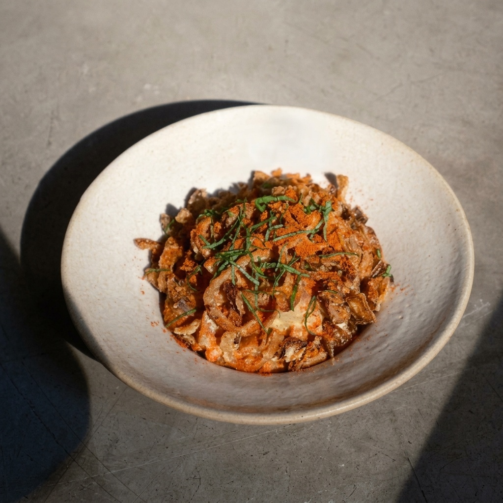
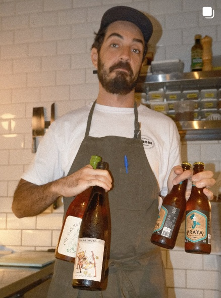
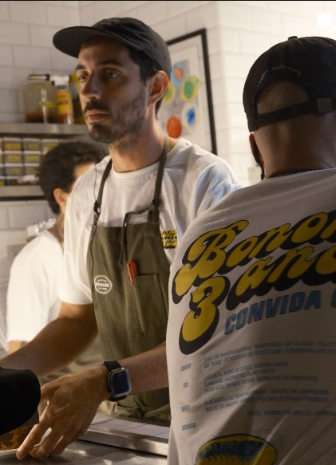
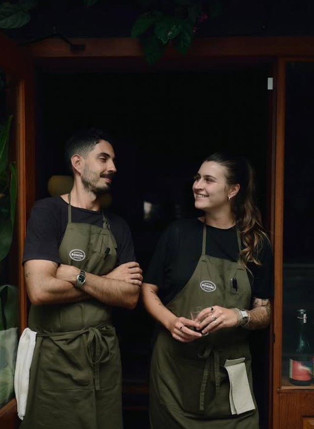
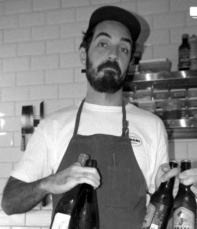

Sem cerimônias, sem garçom engravatado. O rigor de quem passou pelo D.O.M., Tuju e Boragó executado ao vivo em 50 lugares na Rodovia do Rio Tavares.



O Bonomi nasceu no Rio Tavares com uma premissa clara: despir a alta gastronomia de todo o protocolo engravatado e focar naquilo que realmente importa — o produto excepcional, o calor da brasa a 800°C e a conexão direta de quem cozinha com quem come.
Em um salão intimista de apenas 50 lugares na Rodovia do Rio Tavares, a cozinha aberta funciona como palco vivo. Os comensais sentem o calor do carvão, observam a finalização de cada prato e podem sentar espontaneamente nas 6 banquetas do balcão, mantidas sempre livres sem necessidade de reserva prévia.
Nossa carta de vinhos foi pensada com muito cuidado e carinho para fazer sentido com nossos pratos e a proposta da casa, então a sugestão é que provem o que temos para oferecer!
Não! Sempre recebemos por ordem de chegada também :)
Os melhores horários para conseguir um lugarzinho são por volta das 19h ou das 21h, quando costuma haver mais disponibilidade.
Adoraríamos! 🐾 Mas, por conta da nossa cozinha aberta e das normas de segurança alimentar, não podemos receber pets.
Tolerância de 15 minutos de atraso. Após esse período, a mesa poderá ser liberada.
Terça a Sábado: das 19h00 às 23h30 (cozinha encerra pedidos às 22h30). Atendimento por ordem de chegada das 19h às 22h30.
Acesse o Modo Sala para solicitar sua reserva de mesa ou balcão com agilidade e atendimento direto da casa.

